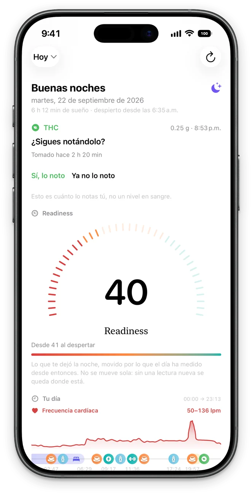
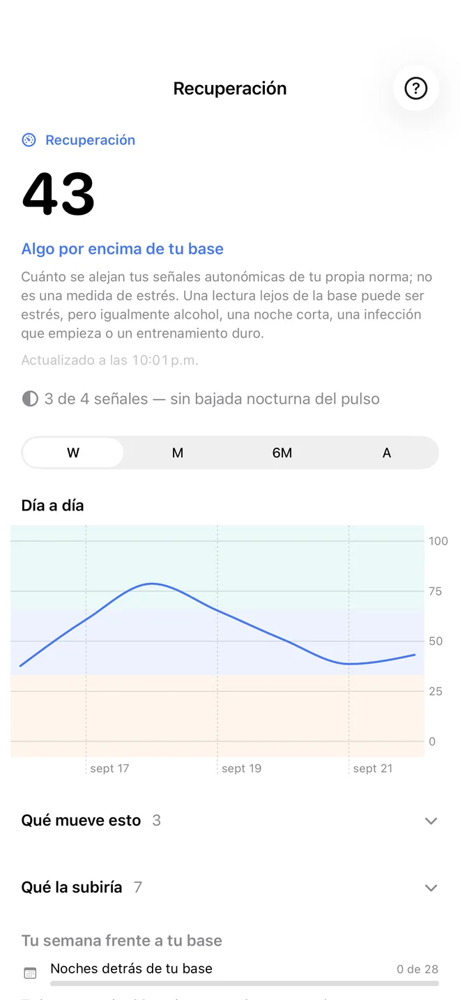
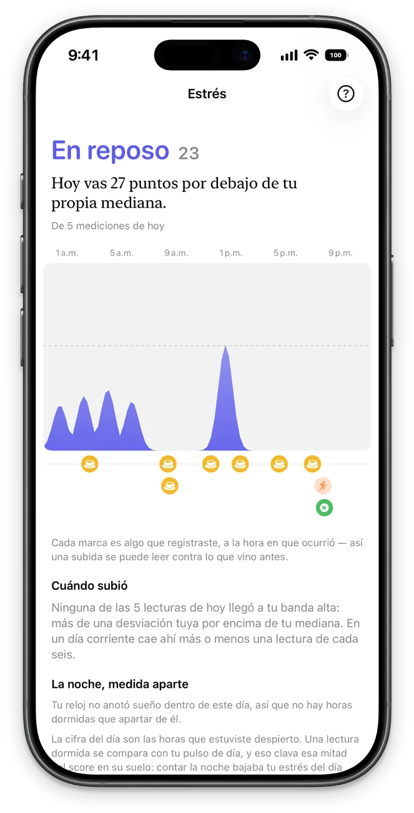
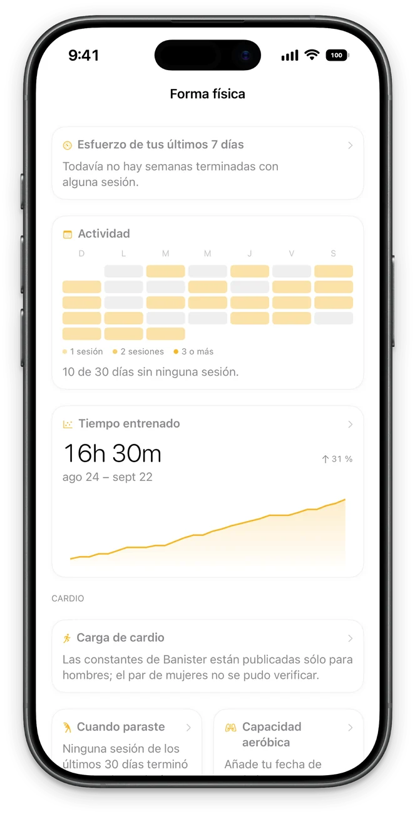
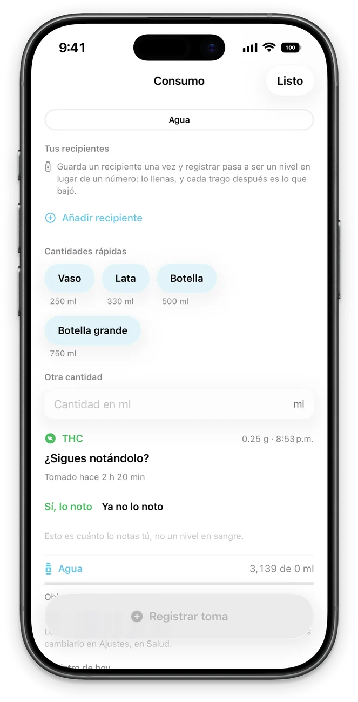
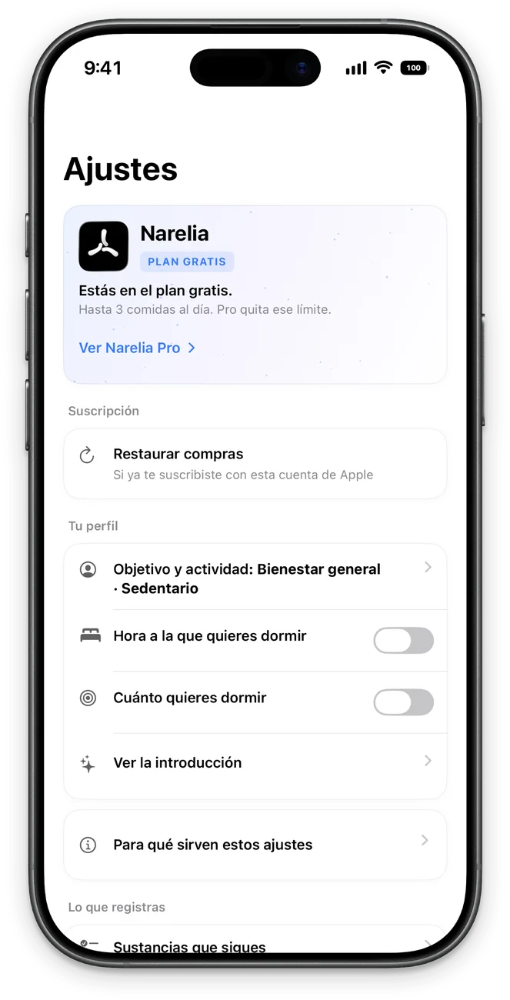

Tus datos, no los de nadie. Your data, measured against you. Vos données, comparées à vous.
Narelia interpreta los datos de tu Apple Watch a la luz de tu propia historia: tus noches, tus semanas, tu rango habitual. Nunca frente a una tabla de población, y sin afirmar más de lo que los datos sostienen. Narelia reads your Apple Watch and compares you with yourself: your nights, your weeks, your usual range. Not with a population chart, and never claiming more than it knows. Narelia lit votre Apple Watch et vous compare à vous-même : vos nuits, vos semaines, votre plage habituelle. Pas à une table de population, et sans prétendre savoir ce qu’elle ne sait pas.
Gratuita durante la beta y sin necesidad de cuenta. Requiere iPhone con iOS 26; se recomienda Apple Watch. Free during the beta. No account. iPhone with iOS 26; Apple Watch recommended. Gratuite pendant la bêta. Sans compte. iPhone sous iOS 26 ; Apple Watch recommandée.

Cada cifra, con el cálculo que la sostiene. Every number shows the arithmetic behind it. Chaque chiffre montre le calcul qui l’a produit.
Sin puntuaciones opacas. Cada pantalla revela de qué se compone su cifra y con qué días se contrasta. No black-box scores. Every screen shows what its figure is made of and which of your days it is compared with. Pas de score opaque. Chaque écran montre de quoi son chiffre est fait et à quels jours il est comparé.
-
Tus cifras, frente a tu propia historiaYour numbers against your own historyVos chiffres face à votre propre histoire
-
Cada cifra, con el cálculo que la sostieneEvery number shows the arithmetic behind itChaque chiffre avec son calcul

-
Lo que tu reloj registra mientras duermesWhat your watch measures while you sleepCe que votre montre mesure pendant votre sommeil

-
Tu esfuerzo, medido contra tus propias semanasYour effort against your own weeksVotre effort face à vos propres semaines

-
Agua, cafeína, creatina, proteína y comidasWater, caffeine, creatine, protein and mealsEau, caféine, créatine, protéines et repas

-
Sin cuenta y sin servidoresNo account, no serverSans compte, sans serveur

PrincipiosPrinciplesPrincipes
Datos, no veredictosData, not verdictsDes données, pas des verdicts
Donde otras apps sentencian «tu recuperación es mala», Narelia precisa: «47 minutos por debajo de tu mediana». El cálculo corre por su cuenta; la interpretación, por la tuya.It writes “47 minutes less than your median”, not “your recovery is bad”. The app does the arithmetic; the interpretation is yours.Elle écrit « 47 minutes de moins que votre médiane », pas « votre récupération est mauvaise ». L’app fait le calcul ; l’interprétation vous appartient.
Transparente mientras aprendeHonest while it learnsHonnête pendant qu’elle apprend
Toda línea base necesita historia. Mientras la tuya se construye, la pantalla indica cuántas noches reúne y cuántas le faltan, en lugar de exhibir una cifra que aún carece de sentido.A baseline needs history. While yours forms, the screen counts the nights it has and the nights it needs, instead of showing a figure that doesn’t mean anything yet.Une référence a besoin d’historique. Tant que la vôtre se forme, l’écran compte les nuits acquises et celles qui manquent, au lieu d’afficher un chiffre qui ne veut encore rien dire.
Tus días, frente a frenteYour days, side by sideVos jours, face à face
Registra agua, cafeína, THC o creatina, y Narelia contrasta los días en que los tomaste con aquellos en que no. Si aparece una diferencia, expone ambos grupos de días y qué parte de ella podría deberse al azar.Log water, caffeine, THC or creatine and it lines up your days with and without them. When it finds a difference, it shows you both groups of days and how much of it could be chance.Notez eau, caféine, THC ou créatine, et elle met côte à côte vos jours avec et sans. Quand elle trouve une différence, elle vous montre les deux groupes de jours et la part qui peut relever du hasard.
Reconoce sus límitesIt knows its limitsElle connaît ses limites
Una pantalla en silencio no demuestra que no haya nada. Cuando los datos no bastan para concluir, Narelia lo advierte, con la cifra que falta, en lugar de disimular el vacío.A quiet screen is not proof that nothing is there. When the data can’t support a conclusion, Narelia says so, with the number, instead of filling the gap.Un écran silencieux ne prouve pas qu’il n’y a rien. Quand les données ne suffisent pas à conclure, Narelia le dit, chiffre à l’appui, au lieu de combler le vide.
Sin cuenta. Sin servidor. No account. No server. Sans compte. Sans serveur.
Todo el análisis se realiza en tu iPhone. Incluso las fotos de tus comidas las interpreta el modelo de Apple dentro del propio dispositivo; nunca salen de él. All analysis happens on your iPhone. Your meal photos are read by Apple’s on-device model, on the phone itself; they are not uploaded anywhere. Toute l’analyse se fait sur votre iPhone. Les photos de vos repas sont lues par le modèle d’Apple, sur le téléphone même ; elles ne partent nulle part.
Tus datos residen en tu iPhone y en la app Salud. La copia en iCloud es opcional, se guarda en tu propia cuenta y permanece desactivada hasta que decidas activarla. Your data lives on your iPhone and in the Health app. The iCloud copy is optional, goes to your own account, and stays off until you turn it on. Vos données restent sur votre iPhone et dans l’app Santé. La copie iCloud est facultative, va sur votre propre compte, et reste désactivée tant que vous ne l’activez pas.
Sin analítica ni identificadores publicitarios. Nadie, tampoco quien desarrolla la app, conserva copia alguna de tus datos. No analytics and no advertising identifiers. The person who makes the app has no copy of anything of yours. Pas d’analytique ni d’identifiants publicitaires. La personne qui fait l’app n’a aucune copie de vos données.
Descúbrela con tus propios datos. Discover it with your own data. Découvrez-la avec vos propres données.
Unirme a la beta en TestFlight Join the beta on TestFlight Rejoindre la bêta sur TestFlightSe instala a través de la app TestFlight de Apple. Tus líneas base comienzan a formarse desde las primeras noches con el reloj puesto. It installs through Apple’s TestFlight app. Baselines start forming with your first nights wearing the watch. Elle s’installe via l’app TestFlight d’Apple. Les références commencent à se former dès vos premières nuits avec la montre.